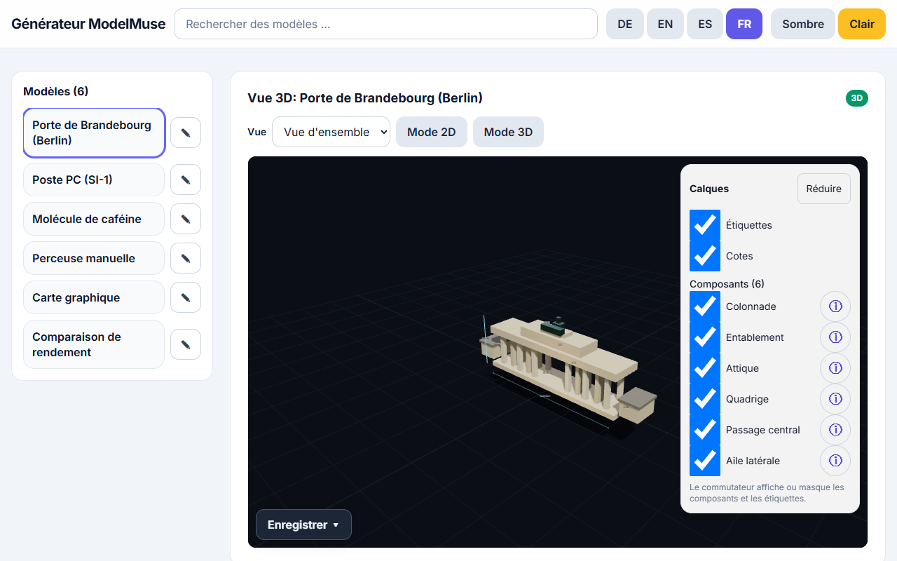

ModelMuse est une app statique en un seul fichier pour voir et créer des modèles pédagogiques 3D et 2D directement dans le navigateur. Pas de backend, pas d'installation : un seul fichier HTML suffit. Une connexion internet est requise au démarrage (bibliothèques 3D/UI et police via CDN ; les API des fournisseurs exigent du réseau).

L'app en français : bibliothèque à gauche, visionneuse 3D au centre, générateur et panneau de retouche à droite.
1. Aperçu des fonctions
6 labos intégrés : 5 × 3D (si-1, gpu-example, free-handbohrmaschine, chemie-koffein, arch-brandenburger-tor) plus 1 démo 2D (demo-2d-chart). Chaque labo explique ses composants en trois langues (allemand, anglais, espagnol).
Visionneuse 3D interactive : pivot/zoom, afficher ou masquer des composants, overlay d'info avec explications.
Moteurs 2D : SVG, style Mermaid, graphique, style D3 et style KaTeX – les termes de diagrammes sont routés automatiquement vers la vue 2D.
Fenêtres ancrées : génération, file d'attente, retouche et info composant apparaissent en overlays empilables et réductibles.
Bibliothèque de session : voir, adopter, importer, exporter et supprimer tes modèles – avec historique (V1 … VX, 10 versions max).
2. Générer des modèles
Choisis un fournisseur et un modèle ; saisis une clé API si requise (session uniquement, voir § 3).
Saisis une description (p. ex. « perceuse, à moitié en coupe ») puis Générer.
Pendant qu'une tâche tourne, d'autres tâches peuvent être soumises – chacune arrive comme modèle à part dans la bibliothèque.
Sous la sélection du modèle, une estimation coût/durée en direct issue des moyennes de télémétrie indique à quoi t'attendre.
Ta propre clé OpenRouter (openrouter.ai/keys), session uniquement
Confidentialité : les clés ne vivent qu'en mémoire ou – avec ton accord explicite – dans sessionStorage. Elles ne sont jamais écrites dans le dépôt ; télémétrie et diagnostics ne contiennent jamais de clé.
Profondeur de réflexion :Standard / xhigh / max – max uniquement là où c'est documenté (1.3/wonder sur Meta Muse, les trois slugs OpenRouter) ; xhigh plafonne les modèles Contributor et la voie Baseten. Aucun paramètre de budget de tokens n'est jamais envoyé – il n'y a volontairement aucune limite de longueur.
4. File d'attente avec ETA
Génération et retouche partagent une seule file. Chaque combinaison fournisseur/modèle/raisonnement a une ETA (60 s par défaut, 240 s pour les configs lourdes et les nouveaux modèles OpenRouter). Le compte à rebours continue après l'ETA (« plus lent que prévu · +{s} s »), annonce la durée totale et abandonne à ETA + 120 s.
5. Exporter
Vues 3D : GLB (textes d'étiquettes/cotes conservés en extras userData) et capture PNG de la vue actuelle.
Vues 2D : SVG (avec correctif xmlns) et PNG.
Bibliothèque de session : exporter la source du modèle avec en-tête de provenance (sans clé).
6. Télémétrie (volontaire) et diagnostic
Après une génération réussie, un dialogue propose de partager un bloc de télémétrie (modèle, fournisseur, raisonnement, prompt, codes usage/HTTP, durée – clés expurgées, mémoire uniquement, jamais persisté). Avec note en étoiles et commentaire, le bloc se copie puis se signale comme issue via un bouton-lien. Par ailleurs, copier le diagnostic copie le diagnostic expurgé (mode, raisonnement, statut HTTP, usage de tokens dont tokens de raisonnement, flag de retry) – sûr pour les bug reports.
7. Limites
Un seul fichier, mais pas hors-ligne : sans réseau (CDN/fournisseurs), l'app ne démarre pas – vérifie ta connexion et recharge.
WebGL2 requis pour la 3D : sans WebGL2, une vue 2D de repli (liste des pièces avec cotes, marquée auto-vérifiée avec limitation).
Les estimations restent des estimations : les prévisions coût/durée sont des moyennes de télémétrie, pas des garanties.